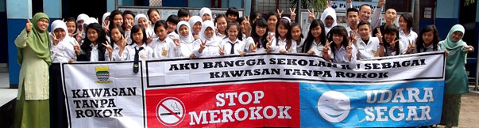

PENEGAKAN PERDA KTR
10 Oktober 2013

Iklan, promosi dan sponsorship rokok merupakan cara yang sangat efektif bagi industri rokok untuk memasarkan produknya. Tidak seperti di negara lain, Indonesia adalah negara yang paling permisif dalam pengaturan ini, dimana hampir semua teknik pemasaran rokok diperbolehkan. Iklan rokok mempunyai pengaruh yang besar terhadap perilaku remaja untuk mulai merokok.
Berdasarkan hasil survey yang dilakukan LSM No Tobacco Community bulan Oktober 2010 pada 100 responden usia 15 – 45 tahun dimana 71% responden berusia 15 s.d 30 tahun, hasilnya 66% responden menyatakan memiliki keinginan untuk merokok setelah melihat reklame rokok dan 69% responden menyatakan tetap memiliki keinginan untuk tetap merokok setelah melihat reklame rokok.
Perlu adanya kebijakan pelarangan iklan rokok di kota Bogor, pelarangan sponsor rokok dalam kegiatan generasi muda termasuk pelarangan penjualan rokok kepada anak anak. Alhamdullilah pada tahun 2009 Kota Bogor telah mempunyai PERDA No 12 Tahun 2009 tentang KTR (Kawasan Tanpa Rokok) serta Peraturan Walikota Bogor No. 7 tahun 2010 tentang JUKLAK PERDA KTR No. 12 Tahun 2009. PERDA KTR ini terdiri atas 13 BAB dan 39 Pasal yaitu secara rinci sebagai berikut :
BAB I : Ketentuan Umum ( Pasal 1)
BAB II : Asas dan Tujuan ( Pasal 2,3)
BAB III : Hak dan Kewajiban ( Pasal 4,5,6)
BAB IV : Kawasan Tanpa Rokok ( Pasal 7,8,9,10,11,12,13,14,15,16)
BAB V : Pembinaan ( Pasal 17,18,19)
BAB VI : Pengawasan & Pengendalian ( Pasal 20,21)
BAB VII : Peran Masyarakat ( Pasal 22,23,24,25,26)
BAB VIII : Sanksi Administratif (Pasal 27,28,29,30,31,32)
BAB IX : Ketentuan Pidana ( Pasal 33,34,35)
BAB X : Sanksi Bagi Aparat ( Pasal 34)
BAB XI : Penyidikan ( Pasal 35)
BAB XII : Ketentuan Peralihan ( Pasal 36)
BAB XIII : Penutup ( Pasal 37,38,39)
Berdasarkan PERDA KTR tersebut di atas bahwa yang dimaksud dengan Kawasan Tanpa Rokok (KTR) adalah tempat atau ruangan yang dinyatakan dilarang untuk merokok, memproduksi, menjual, mengiklankan dan/atau mempromosikan rokok. Salah satu tujuan penerapan KTR di Kota Bogor adalah untuk melindungi perokok pasif dan mencegah perokok pemula. KTR itu sendiri ditetapkan di 8 (delapan) tatanan yaitu sebagai berikut (1) tempat umum; (2) tempat kerja; (3) tempat ibadah; (4) tempat bermain dan/atau berkumpulnya anak-anak; (5) kendaraan angkutan umum; (6) lingkungan tempat proses belajar mengajar; (7) sarana kesehatan; (8) sarana olah raga.
Selanjutnya berdasarkan PERDA KTR Pasal 5 menyebutkan bahwa setiap orang wajib tidak merokok di tempat atau area yang dinyatakan sebagai KTR dan Pasal 7 PERDA KTR mengatur tentang Lembaga dan/atau Badan dalam penerapan KTR, yaitu sebagai berikut : (1) Pimpinan Lembaga dan/atau Badan yang telah ditetapkan sebagai KTR wajib melarang orang merokok di wilayah yang menjadi tanggung jawabnya. (2) Pimpinan Lembaga dan/atau Badan pada Tempat Umum dan Tempat Kerja yang telah ditetapkan sebagai KTR dapat menyediakan tempat khusus merokok. (3) Tempat khusus merokok sebagaimana dimaksud diatur oleh Walikota. (4) Pimpinan Lembaga dan/atau Badan yang telah ditetapkan sebagai KTR wajib memasang tanda-tanda dilarang merokok atau pengumuman yang dapat berupa pamflet dan/atau audio visual pada tempat dan/atau lokasi yang menjadi tanggung jawabnya. (5) Pimpinan Lembaga dan/atau Badan berhak untuk melakukan pengawasan internal pada tempat dan/atau lokaki yang menjadi tanggung jawabnya. (6) Ketentuan lebih lanjut mengenai bentuk, ukuran dan persyaratan tanda-tanda dilarang merokok diatur oleh Walikota.
Penegakan PERDA No. 12 tahun 2009 tentang Kawasan Tanpa Rokok telah dimulai sejak bulan Mei 2010 melalui kegiatan Tindak pidana ringan (Tipiring), operasi simpatik dan monitoring ke 8 (delapan) Kawasan Tanpa Rokok yang ada di Kota Bogor. Kegiatan Tipiring sejak bulan Mei 2010 sampai dengan bulan Mei 2011 telah dilaksanakan sebanyak 8 kali yaitu 2 kali di angkutan kota, 2 kali di tempat kerja, dan 4 kali di tempat-tempat umum dengan jumlah pelanggar yang terjaring sebanyak 177 orang pelanggar dan total jumlah denda yang dikeluarkan masyarakat sebesar Rp 2.460.000,- (Dua juta empat ratus enam puluh ribu rupiah). Secara keseluruhan total denda telah disetorkan ke kas negara. Tim Tipiring meliputi petugas gabungan dari SKPD terkait, Kepolisian, TNI, Kejaksaan, Pengadilan dan LSM.